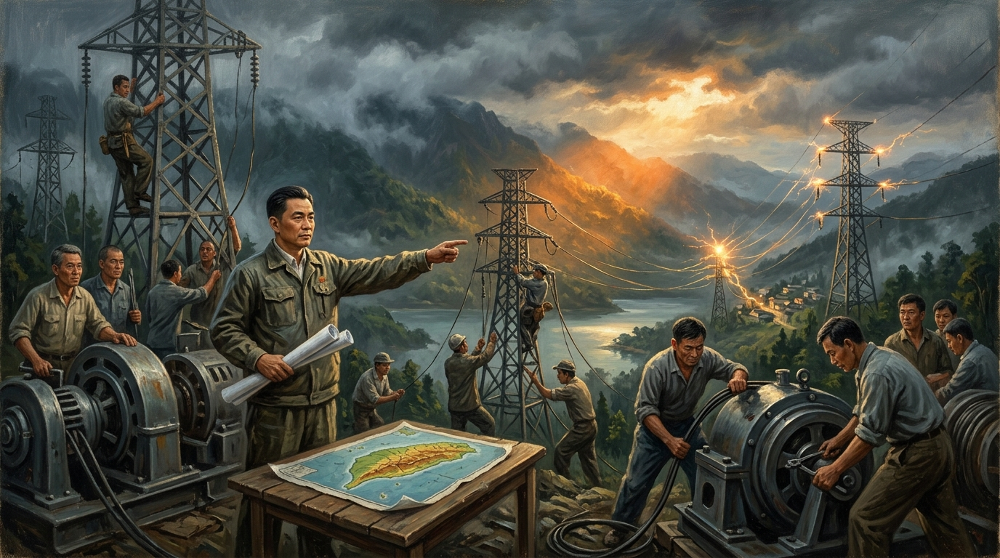
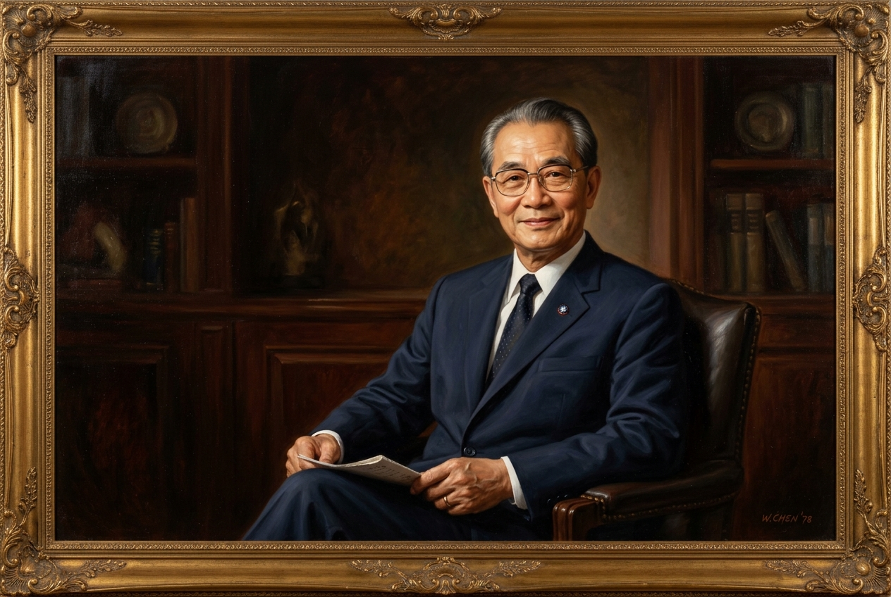
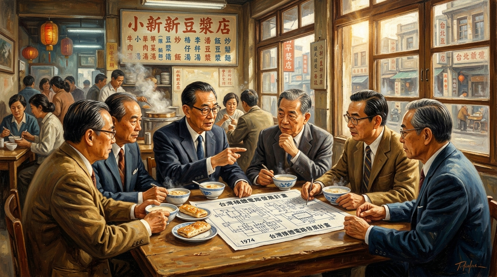

1946 破除黑暗
✦ 台灣現代化總工程師・跨越世紀的清流典範
經緯萬方・點亮矽島
孫運璿先生生平特展
自黑水溝畔搶修全台八成電網，至晨光豆漿店敲定半導體宏圖；
他以工程師的務實與政治家的風骨，鑄就了台灣半個世紀的繁榮繁花。
「做官是一時的，做事是一世的；為國家百姓做事，死而後已。」

前行政院長 孫運璿 先生 (1913-2006)
CURATION THEMES
四大核心策展視角
透過珍貴歷史文獻、口述檔案與動態場景，重回奠定今日台灣關鍵走向的四大時空座標。
1969 經脈千里

1974 矽島黎明
1984 風骨長存
HISTORICAL MILESTONES & ARCHIVES
經緯春秋・時代大事紀
資料全面考證自文化部國家文化記憶庫與維基百科。詳細收錄孫運璿先生從北國求學、戰火救急、光復復電、交通擘劃、科技立國至晚年清廉自守之完整歷史編年。
INTERACTIVE RAILWAY VOYAGE
光之軌道・時光列車動態導覽
借鑑國立臺灣歷史博物館鐵道特展互動形式。請搭上「光之旅號」時光列車，沿著現代化軌道巡禮五大歷史車站，點擊展品熱點探索歷史原貌，收集站點專屬紀念印章！
臺灣現代化時光鐵道・特等乘車證
NO. 1913-2006
蓬萊・哈工大
啟程起點站
➔
日月潭・竹科
中途行經關鍵站
➔
仰高重陽
終點豐碑站
💮 探索印記・歷史車站戳印冊
已收集 0 / 5 枚造訪每個車站，按下「蓋上此站探索戳章」，集滿即可點亮乘車證的所有歷史印記！
HISTORIC RESIDENCE & EXHIBITS
走入歷史現場・官邸特展導覽
原為行政院長官邸，和洋混融式日治風貌與蒼翠繁茂的百年庭園相輝映。這裡曾是孫院長公務擘劃的決策核心，亦是他晚年以堅定意志復健之所。
洋館公務廳（決策中心）
曾接待海內外重要政要、科學家與企業家。保留孫院長手寫施政備忘錄、決策沙發與國際勳章。
✦ 特展亮點：台積電籌建秘密會議記錄影本草案
和館起居室（平淡生活）
鋪設傳統榻榻米與推拉紙門，展現孫夫人與子女質樸恬淡的日常生活陳設與舊收音機。
✦ 特展亮點：使用近三十年未換的手工老木櫃
特展互動館（現代多媒體）
運用環景投影與互動螢幕，重現1946年台電搶修圖面與1974年小欣欣豆漿店對話原音情境。
✦ 特展亮點：全景時空沉浸體驗
生態沉思庭園（百年老樹）
園內植有高聳的老榕、百年楓香與竹林，綠意盎然，為參觀者提供安寧沉思與追憶之空間。
✦ 特展亮點：孫院長生前每日推輪椅散步之石徑
TESTIMONIALS & MEMORIES
跨越黨派的景仰・世紀巨擘迴響
政界泰斗、科技業界拓荒者與文化界領袖對孫運璿先生的真情緬懷。
「如果沒有孫運璿院長與李國鼎資政當年的遠見與無私魄力，就不可能有今天的台積電，也不可能有台灣今日在全世界舉足輕重的半導體矽盾。」
「孫院長以工程師的務實與科學家的誠實來治理國家，給予民間企業最大的發揮空間，他是台灣走向現代化最受敬重的一代總工程師。」
「孫運璿先生一生為官清廉自律，退隱後住在重陽國宅，無半點特權。他的風骨不僅是政治家的典範，更是台灣最珍貴的人格資產。」
HISTORY KNOWLEDGE CHALLENGE
歷史探索挑戰・時空記憶考驗
回答五道精選歷史問答題，檢驗您對孫運璿先生歷史事蹟的了解程度！
COMMEMORATIVE GUESTBOOK
向巨擘致敬・歷史迴響留言簿
留下您對孫運璿先生為國奉獻精神的感念，留言將永久陳列於數位紀念牆。